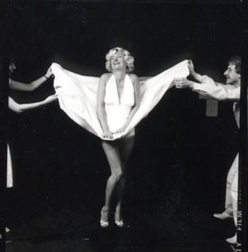

Chapter 20. Marilyn
1982 was the Garrick Altrincham's Jubilee Season and we were invited to present our new musical show 'Marilyn' there. It had already been written - as mentioned in an earlier chapter - the year before, and demoed via a home recording with just my piano. Now it was going to get the full treatment. The dates were October 4th to 9th 1982 and unlike Stag, every song was written specifically for the show; nothing was written before and nothing that got written was left out. It all ended up in ' Marilyn'. It was a completely consistent piece of work.
The show was of course ostensibly about Marilyn Monroe, the storyline set 20 years after her death. A company decides to make a film about her life, and goes on a 'Search for an Unknown Star' in order to find a previously unknown actress to play Marilyn part in the film-to-be. Lee Francescini (an unknown bit part player), goes for the audition and wins it. She changes her name to Lee Frances and decides to just treat this film part as an acting job, no more no less. However the film moguls want her to live and breathe the part and do nothing else. She being a very feisty lady puts up lots of barriers to this, knowing the pitfalls that Marilyn fell into herself, decides she will definitely not fall into the same ones. In trying however, not to do that very thing, she succeeds in making exactly the same mistakes. In the end events reach a terrifying conclusion.
 The songs that I wrote were quite different in style from 'Stag', partly because the show itself was so different. There was no otherworldly mystical element so prevalent in Stag, but a looser jazzy feel to the whole show, that came out somewhat in my music. Of course there are still one or two Dumigan trademarks, but you have to look for them; they don't come out and smack you around the face like they did in Stag.
I was to get a professional band, and Paul Mitchell-Davidson who was well known as a gigging professional musician and arranger/composer was paid to do the arrangements for the band from my short score, and demo recordings. It was going to be led by Paul on guitars and mandolin, with me on Piano, and session guys on Bass, Trombone, Flute, Vibraphone, Saxophone and Drums. (Incidentally, I still have all the score and the separate parts to do the show, just in case!) Well to cut a long story as short as I can make it, we got our Lee/Marilyn in the form of Stevie Holt, who had in fact already played Marilyn in 'After the Fall', a play written by Marilyn's then husband Arthur Miller. Stevie really looked the part, and more to the point had a great voice capable of putting on the 'Marilyn' sound when required.
By necessity it was a Garrick production, therefore the other parts supposedly went to Garrick people. Although with Chris being the director, he chose very largely whom he wanted and picked exactly who could do the parts. People with whom we had been involved with before were Allan Taylor who played Malcolm Bishop, Norman Partington, who played Stein, Louis Grant who played Joe, Andrew Pastor, who played Bud and also Pat Shaugnessy, Alison Davis who played Arabella, and Don Poole who played Gordon Cooper. Another further 15 parts went to people who previously had no involvement with Genesis.
Well the rest as they say is history. When the band came into the theatre for the final run-throughs, the sound was phenomenal! The entire show week was unforgettable for me and was a fitting end to my theatre going days. (It proved to be the last show that I did, to date!) We nearly got a video of the whole performance, except that Arthur got in the way of the lighting guys and was moved on and on, until he had nowhere to stand. So it didn't get videoed!
However, we did get a recording of the whole show, using stereo microphones on a cassette recorder. The balance by sheer fluke is by and large marvellous. Because the microphones were in the middle of the auditorium half way back, they picked up the natural balance of band to singers and so it was pretty damn decent. The only quiet patches are the dialogue parts that were spoken near the back of the stage. Similarly to the Stag tapes, Tony Ward and myself have just finished producing a double CD of Marilyn. By using the same cleaning up process as previously described, we have got an end result that is really worth hearing.
But what became of the show, I hear you ask? There are two addendums to the whole event, one of which was that as we went into the final week of rehearsals, someone brought in 'The Stage' paper, announcing a new professional musical production of a show called, yes you guessed it... Marilyn, starring Stephanie Lawrence, with music by Ray Cook and book by Jacques Wilson.The silly thing was that it totally bombed after a few short weeks and disappeared forever, never to be seen or heard of again. Our show was far better than that, but you can't have two shows with the same title, different or not, without one tarnishing the other in the public eye.